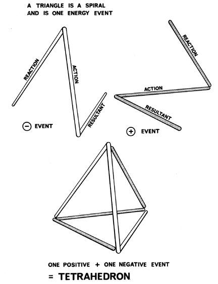

|  |
| Fig. 511.10 Two Triangular Energy Events Make Tetrahedron: The open-ended triangular spiral can be considered one "energy event" consisting of an action, reaction and resultant. Two such events (one positive and one negative) combine to form the tetrahedron. |